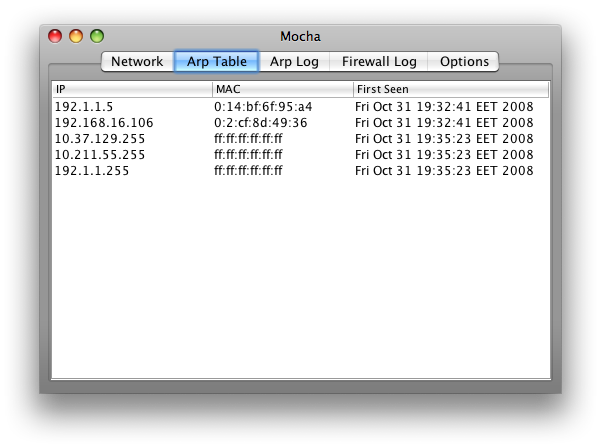
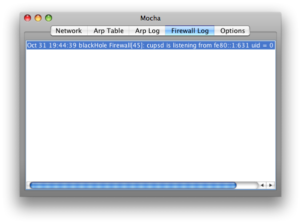

Mocha: ARPWatch / Log Watcher for Mac OS X and Linux
 Mocha is a tool that monitors
your network activity and keeps a record of Ip / Mac address
pairings and firewall logs. It will give a warning when it notices any
suspicious activity, like any changes in Mac address or any connection
attempt to the firewall.
Mocha is a tool that monitors
your network activity and keeps a record of Ip / Mac address
pairings and firewall logs. It will give a warning when it notices any
suspicious activity, like any changes in Mac address or any connection
attempt to the firewall.
Installation & Usage
- Mac OS X
Download the dmg image move it to your applications folder and you are set. For firewall log watch you need to enable firewall logging under
System Preferences -> Security -> Firewall
-> Advanced -> Enable Firewall Logging
- Linux
Download the jar file. Either double click it or issue "java -jar mocha.jar" In order for Firewall log watch to work you need to enable firewall logging and log packages with "IPTABLES: " prefix. Using a rule similar to the following...
/sbin/iptables -A INPUT -j LOG --log-prefix "IPTABLES: " \ -m limit --limit $LOGLIMIT --limit-burst $LOGLIMITBURST
Requirements
Mocha is written in java, so as long as you have JVM and arp command it will work on all operating systems. Tailing system logs is only supported on OS X and Linux, it has been tested on Mac OS X 10.5 running Java 1.5 and Ubuntu running Java 1.6.
Building from source
Included in the source package is an ant script, in order to build it from source use target app in OS X which will build and create an application bundle, and target linux on linux which will just build it in order to create a jar file use target jar after target linux..
Download
- Application - Mac OS X Linux
- Source Code ( Released under GPL via GitHub )
Screenshots
Network View

Arp Table

Changelog
- May 31, 2009 - New interface, Option to import/export arp table, Notifications can now be delivered via mail.
- April 12, 2009 - Added option to suppress new host messages.
- December 20 , 2008 - Added Network info window.
- November 14 , 2008 - New version with minor bug fixes and debian compatibility.
Application logo by VisualPharm
For bug reports/fixes/help See Contact
Any feature requests are also welcome see Contact
Back to Home